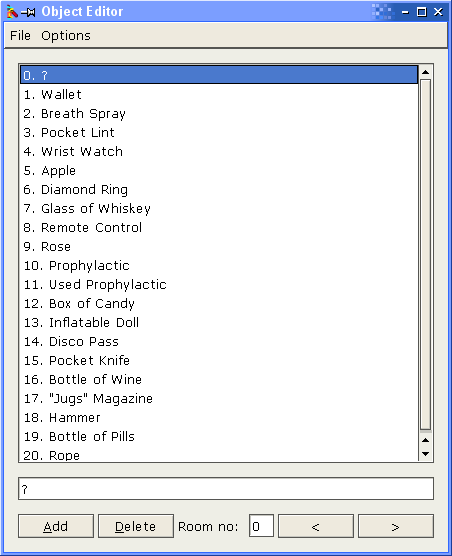

To load the Object editor, select the option from the "Tools" menu or the toolbar. When you do this, it will load the object file of the current game (if a game is open). You can then open a different file if you wish.

Most of the editing is pretty self-explanatory. There are a few things, however than need explanation:
All objects MUST have a name. The default name for an object that does not have a proper name is '?'. When you delete an object and it is not the last one in the list, it will be replaced with '?'. This is because moving the other objects up in the list would require re-compilation of all logics that refer to those objects, so it is better to leave the other object numbers as they are.
The object file must contain at least one object. A new object file will just contain the object '?'.